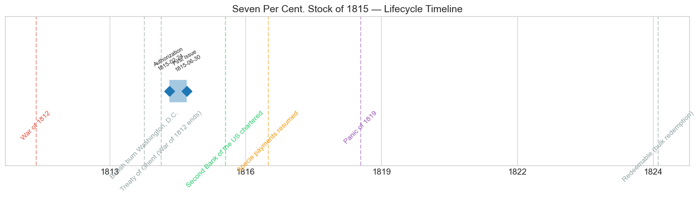
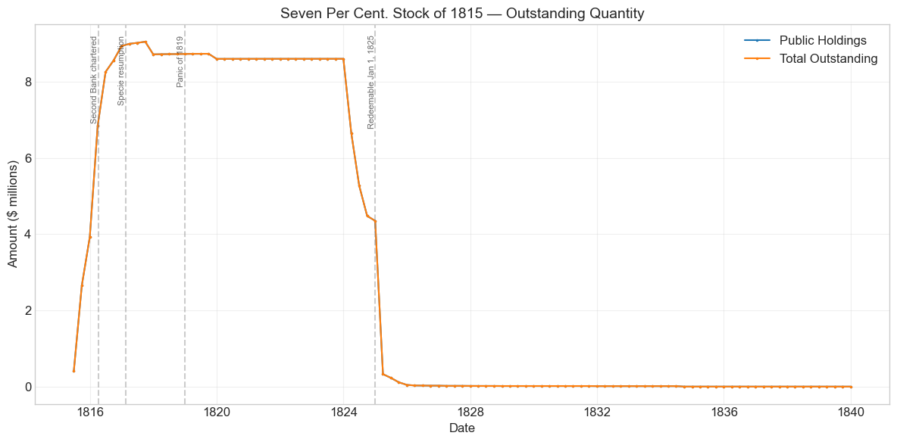
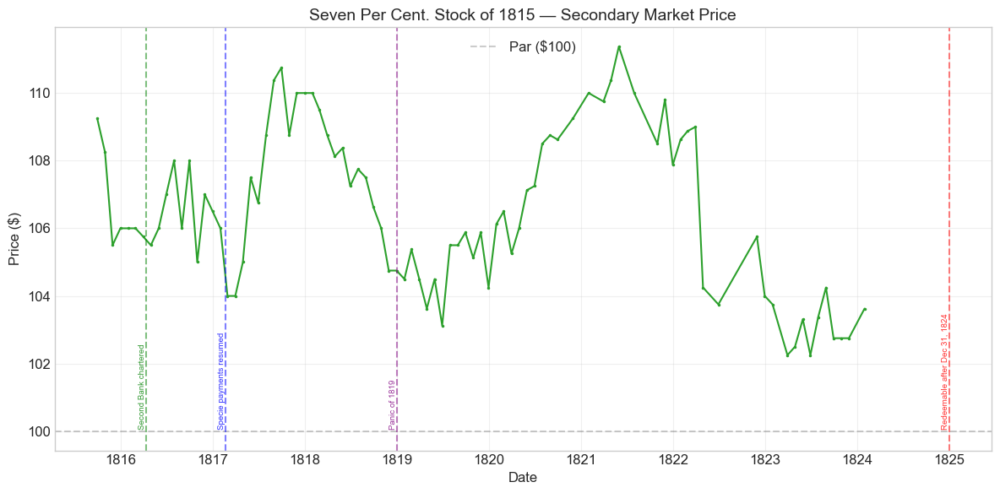
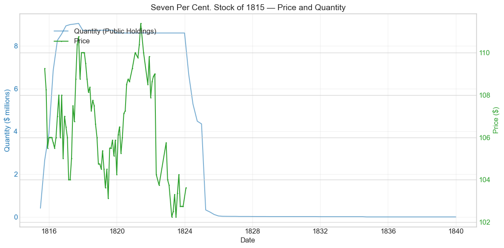
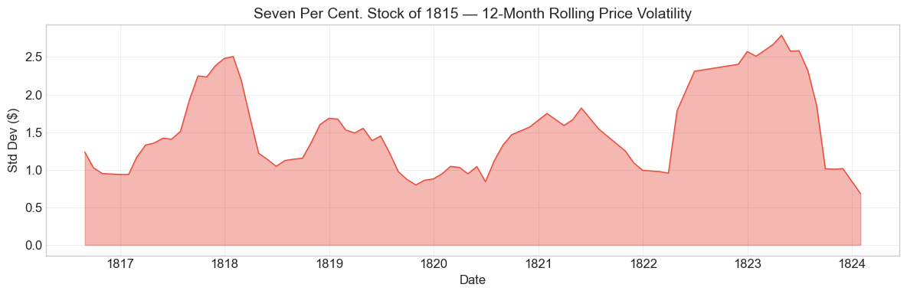

Bond Biography: Seven Per Cent. Stock of 1815#
Funding a Depreciated Currency: The Last Loan of the War of 1812#
An enhanced chapter from the Hall-Payne-Sargent US Federal Bond Database (2,857 issues, 1776-1960)
Bond ID (L1): 20064 | Category: Interest Bearing > Marketable > Long Term Bond
import pandas as pd
import numpy as np
import matplotlib.pyplot as plt
import matplotlib.patches as mpatches
import datetime
import warnings
warnings.filterwarnings('ignore')
plt.style.use('seaborn-v0_8-whitegrid')
plt.rcParams.update({'figure.figsize': (12, 6), 'font.size': 12,
'axes.titlesize': 14, 'axes.labelsize': 12})
# Load the bond database
store = pd.HDFStore('../data/BondDF.h5', mode='r')
BondList = store['BondList']
BondQuant = store['BondQuant']
BondPrice = store['BondPrice']
store.close()
BondQuant_T = BondQuant.transpose()
BondPrice_T = BondPrice.transpose()
bond_id = 20064
print(f'Loaded data for: Seven Per Cent. Stock of 1815 (ID: 20064)')
/Users/thomassargent/anaconda3/lib/python3.9/site-packages/pandas/core/arrays/masked.py:60: UserWarning: Pandas requires version '1.3.6' or newer of 'bottleneck' (version '1.3.5' currently installed).
from pandas.core import (
Loaded data for: Seven Per Cent. Stock of 1815 (ID: 20064)
Overview#
The Seven Per Cent. Stock of 1815 was authorized under the Act of February 24, 1815 (with supplementary legislation of March 3, 1815). It was first issued on June 30, 1815 with a coupon rate of 7.0% – the highest coupon on any funded stock created during the War of 1812 era. During its lifetime on the secondary market, the bond’s average price was $106.52, ranging from $102.25 to $111.38 (based on 88 monthly observations from 1815-09-30 to 1824-01-31). Peak outstanding reached $9.05 million on 1817-09-30.
This bond was born of desperation but lived a charmed life. It was conceived in the darkest weeks of the War of 1812, when the Treasury’s credit lay in ruins: Washington had been burned, the banks outside New England had suspended specie payments, and the government’s Treasury notes – pressed into service as a de facto currency – were circulating at a discount. The acts of early 1815 offered holders of those depreciated notes a way out: convert them into long-term funded stock. To make the offer attractive, Congress attached a premium coupon of 7 percent – a full point above the 6 percent that had been the ceiling of respectable federal borrowing since the Jeffersonian era, and a frank admission of how far the government’s credit had fallen. The chapters on the Six Per Cent. Loan of 1812 (Bond ID 20048) and the loans of 1813 trace how the Treasury’s terms deteriorated step by step as the war dragged on; the 7 percent stock marks the bottom of that descent.
Yet almost at the moment of its creation, the bond’s fortunes reversed. News of the Treaty of Ghent reached American markets in February 1815, just days before the authorizing act passed. The Seven Per Cent. Stock was therefore issued into a rapidly healing market: it never traded below par in our data, spent its entire quoted life at a premium, and was retired early – bought up by the sinking fund and redeemed en masse once it became redeemable at the start of 1825 – as postwar Treasury surpluses melted away the war debt. A high-coupon bond with a short life, it is a fitting coda to the War of 1812 arc: the instrument that funded the wreckage of a wartime currency ended its days as one of the safest, steadiest securities in the American market.
Historical Context#
The following major events occurred during this bond’s lifetime:
Date |
Event |
Category |
|---|---|---|
1812-06-18 to 1815-02-18 |
War of 1812 |
War |
1814-08-24 |
British burn Washington, D.C. |
Other |
1814-12-24 |
Treaty of Ghent (War of 1812 ends) |
Other |
1816-04-10 |
Second Bank of the US chartered |
Legislation |
1817-02-20 |
Resumption of specie payments |
Monetary |
1819-01-01 to 1821-12-31 |
Panic of 1819 |
Crisis |
The Fiscal Catastrophe of Late 1814#
To understand why the United States was paying 7 percent in 1815, one must understand the autumn of 1814 – the low point of federal credit between the Revolution and the Civil War.
By 1814 the war was consuming far more than the Treasury could raise. Customs revenue, the government’s fiscal mainstay, had been strangled by the British blockade; the Republican Congress had come only slowly and reluctantly to internal taxation; and the long-term loans of 1813 and 1814 had been placed only at deepening discounts (the 1814 loans sold at just 80 percent of face value). On August 24, 1814, British forces burned the public buildings of Washington, including the Treasury itself. Within days, banks in Baltimore, Philadelphia, and New York suspended specie payments, and suspension spread to most of the country outside New England. The nation’s monetary system fragmented into a patchwork of depreciated, mutually inconvertible state bank notes.
The Treasury, which kept its deposits in those banks and received its taxes in their notes, was caught in the wreckage. It increasingly paid its bills in Treasury notes – short-term, interest-bearing paper that had been issued in successive waves since 1812 and that now functioned as the government’s de facto currency. As the volume grew and confidence shrank, the notes went to a discount against specie. In the closing months of 1814 the Treasury was, by the standard accounts (Dewey 1918; Hickey 1989; Hall and Sargent), unable to meet some of its obligations punctually: interest due on the funded debt in New England could not be paid in the specie or Boston funds that creditors were entitled to demand, and some maturing Treasury notes went unredeemed at their due dates. These episodes – partial and temporary, but real – are conventionally described as a technical default, and contemporaries did not mince words about them. Secretary of the Treasury Alexander J. Dallas, taking office in October 1814, told Congress plainly that the public credit was in a state of prostration.
The Funding Mechanism: Turning Notes into Stock#
Dallas’s remedy, embodied in the acts of late 1814 and early 1815, was to fund the floating mass of Treasury notes into long-term stock. The Act of February 24, 1815 authorized a new issue of up to $25 million in Treasury notes, including for the first time “small” Treasury notes in denominations under $100 that bore no interest and were plainly designed to circulate as money. Crucially, the legislation allowed holders to convert their notes into funded stock: the small non-interest-bearing notes could be funded at par into stock bearing 7 percent, while the larger interest-bearing notes were fundable into 6 percent stock. The Seven Per Cent. Stock of 1815 is the instrument created by the first of these channels.
Why 7 percent? The premium coupon did double duty. It compensated holders of the small notes for the interest those notes did not pay, and – more fundamentally – it was the price of coaxing voluntary conversion out of a public holding depreciated government paper. A government whose 6 percent bonds had recently sold at 80 could not fund its floating debt at 6; the extra point was, in effect, the discount on the Treasury’s credit made explicit in the coupon rather than in the issue price. It was the highest rate the federal government had paid on a funded loan since the emergency 8 percent loans of 1798-1800.
The Sudden Peace#
Then everything changed at once. The Treaty of Ghent had been signed on December 24, 1814; news of it reached New York on February 11, 1815, hard on the heels of word of Andrew Jackson’s victory at New Orleans (January 8). The Senate ratified the treaty within the week. Prices of government securities leapt – the 6 percent war loans spiked more than 20 percent in February 1815 – and the fiscal emergency dissolved with remarkable speed. Trade resumed, customs revenue recovered, and the doubled wartime tax rates briefly remained in force, swinging the budget into surplus by 1816-1817. The Seven Per Cent. Stock was thus issued after the crisis that justified its terms had passed: subscribers who funded their notes in 1815 and 1816 received a premium coupon on the credit of a government whose solvency was no longer in doubt. The market noticed, and from its first quotation in September 1815 the stock traded above par.
Postwar Consolidation#
The years of this bond’s life coincide with the great postwar reconstruction of American finance. The Second Bank of the United States was chartered on April 10, 1816 and opened for business in January 1817; under Treasury pressure, the principal banks resumed specie payments on February 20, 1817, ending the two-and-a-half-year suspension. The sinking fund, reorganized and generously funded by the act of March 3, 1817, began systematically buying up and retiring the war debt. Even the Panic of 1819 – a severe deflationary contraction triggered in part by the Second Bank’s own credit tightening – did not threaten federal solvency: the government’s fixed coin-payable coupons became more valuable in real terms as prices fell, and after a modest dip in 1819 the 7 percent stock climbed to its all-time high above $111 in mid-1821. By the early 1820s recurring Treasury surpluses made early retirement of the highest-coupon debt an obvious priority, and the 7s – redeemable after December 31, 1824 – were first on the list.
# Bond Lifecycle Timeline
fig, ax = plt.subplots(figsize=(14, 4))
# Key dates
dates = [('Authorization', '1815-02-24'), ('First Issue', '1815-06-30')]
events = [('War of 1812', '1812-06-18', 'war'), ('British burn Washington, D.C.', '1814-08-24', 'other'), ('Treaty of Ghent (War of 1812 ends)', '1814-12-24', 'other'), ('Second Bank of the US chartered', '1816-04-10', 'legislation'), ('Specie payments resumed', '1817-02-20', 'monetary'), ('Panic of 1819', '1819-01-01', 'crisis'), ('Redeemable (bulk redemption)', '1825-01-01', 'other')]
import matplotlib.dates as mdates
from datetime import datetime
# Plot bond lifetime bar
d0 = datetime.strptime(dates[0][1], '%Y-%m-%d')
d1 = datetime.strptime(dates[-1][1], '%Y-%m-%d')
ax.barh(0, (d1 - d0).days, left=mdates.date2num(d0), height=0.3,
color='#1f77b4', alpha=0.4, label='Bond Lifetime')
# Mark key dates
for label, date_str in dates:
d = datetime.strptime(date_str, '%Y-%m-%d')
ax.plot(mdates.date2num(d), 0, 'D', color='#1f77b4', markersize=10)
ax.annotate(f'{label}\n{date_str}', (mdates.date2num(d), 0.25),
ha='center', va='bottom', fontsize=8, rotation=30)
# Mark historical events
colors = {'war': '#e74c3c', 'crisis': '#9b59b6', 'legislation': '#2ecc71', 'other': '#95a5a6', 'monetary': '#f39c12'}
for name, date_str, cat in events:
d = datetime.strptime(date_str, '%Y-%m-%d')
ax.axvline(mdates.date2num(d), color=colors.get(cat, 'gray'), alpha=0.5, linestyle='--')
ax.annotate(name, (mdates.date2num(d), -0.25), ha='center', va='top',
fontsize=10, rotation=45, color=colors.get(cat, 'gray'))
ax.set_yticks([])
ax.xaxis.set_major_formatter(mdates.DateFormatter('%Y'))
ax.set_title('Seven Per Cent. Stock of 1815 — Lifecycle Timeline')
ax.set_ylim(-1, 1)
plt.tight_layout()
plt.show()

Bond Features#
Feature |
Detail |
|---|---|
Name |
Seven Per Cent. Stock of 1815 |
Authorizing Act |
February 24, 1815 |
Authorization Date |
February 24, 1815 |
First Issue Date |
June 30, 1815 |
Term |
irregular |
Redeemable After |
December 31, 1824 |
Coupon Rate |
7.0% |
Payment Frequency |
4.0 times/year |
Callable |
No |
Payable in Coin |
Yes |
Authorized Amount |
N/A (limited by Treasury notes funded) |
Price Sold |
1.0 (par, in exchange for Treasury notes) |
The “irregular” term reflects the bond’s origin: it was not sold for cash in a fixed amount on a fixed schedule, but issued piecemeal as holders presented Treasury notes for funding. Its total size was therefore determined by the public’s conversion decisions, not by a subscription book.
# Display full bond features from database
row = BondList.loc[20064]
display_cols = [
"Treasury's Name Of Issue", 'Authorizing Act', 'Term Of Loan',
'First Issue Date', 'First Redemption Date', 'Final Redemption Date',
'Coupon Rate', 'Coupons Per Year', 'Callable', 'Coin',
'Authorized Amount', 'Price Sold'
]
print('Bond Features from Database:')
print('=' * 55)
for col in display_cols:
if col in row.index:
print(f' {col:<30} {row[col]}')
Bond Features from Database:
=======================================================
Treasury's Name Of Issue Seven Per Cent. Stock of 1815
Authorizing Act February 24, 1815
Term Of Loan irregular
First Issue Date 1815-06-30 00:00:00
First Redemption Date NaT
Final Redemption Date NaT
Coupon Rate 7.0
Coupons Per Year 4.0
Callable 0.0
Coin 1.0
Authorized Amount nan
Price Sold 1.0
Bond Quantity Over Time#
The bond’s outstanding quantity peaked at $9.05 million on 1817-09-30. Data spans from 1815-06-30 to 1839-12-31 (99 monthly observations).
# Bond quantity over time
fig, ax = plt.subplots(figsize=(12, 6))
for stype in ['Public Holdings', 'Total Outstanding']:
try:
s = BondQuant_T.loc[(20064, stype)]
s = s[s.notna()]
if len(s) > 0:
ax.plot(s.index, s.values / 1e6, marker='.', markersize=3, linewidth=1.5, label=stype)
except KeyError:
pass
ax.set_title('Seven Per Cent. Stock of 1815 — Outstanding Quantity')
ax.set_xlabel('Date')
ax.set_ylabel('Amount ($ millions)')
ax.legend()
ax.grid(True, alpha=0.3)
events = {'1816-04-10': 'Second Bank chartered', '1817-02-20': 'Specie resumption', '1819-01-01': 'Panic of 1819', '1825-01-01': 'Redeemable Jan 1, 1825'}
for date_str, label in events.items():
d = pd.Timestamp(date_str)
ax.axvline(d, color='gray', alpha=0.4, linestyle='--')
ax.text(d, ax.get_ylim()[1]*0.97, label, rotation=90, va='top', ha='right', fontsize=8, alpha=0.7)
plt.tight_layout()
plt.show()

Quantity Analysis#
The quantity path traces the bond’s life cycle in three distinct phases:
Accumulation by conversion (1815-1817). Unlike a cash loan placed in one subscription, the Seven Per Cent. Stock grew gradually as Treasury-note holders exercised their funding option. From $2.65 million at the end of September 1815, outstanding stock climbed to $3.92 million by December 1815, $8.93 million by December 1816, and a peak of $9.05 million in September 1817. The steepest growth came in the first half of 1816, when large blocks of notes were presented for funding – holders locking in the 7 percent coupon while the option remained open. That the total reached only about $9 million (against $25 million of authorized note issues under the February 1815 act) reflects both the improving postwar market for the notes themselves and the winding down of note issues once peace revenue returned.
Plateau (1817-1823). A modest reduction of roughly $0.33 million in late 1817 coincides with the period when the reorganized sinking fund commissioners were actively purchasing war stocks; the amount is small, and the record for this particular issue is less well documented than for the 6 percent loans, so we note the timing without pressing the attribution. From 1818 through 1823 the outstanding amount was essentially frozen at $8.6-8.7 million: the stock was not yet redeemable, and its persistent premium price made open-market retirement expensive relative to redeeming other debt.
Rapid retirement (1824-1825). The stock became redeemable after December 31, 1824, and the Treasury – flush with surpluses and eager to shed its highest-coupon obligation first – retired it aggressively. Outstanding amounts fell from $8.6 million at the end of 1823 to $4.35 million by the end of 1824 (purchases and preparations ahead of the redemption date) and then collapsed to under $50,000 by the end of 1825 once mass redemption began. The trivial residual balances that linger in the data into the 1830s (a few tens of thousands of dollars, dwindling to $261 by 1834 and $33 by 1836) represent unpresented certificates – stock whose owners had not yet come forward to collect, a common feature of every early federal redemption.
Secondary Market Prices#
Overall Statistics (1815-09-30 to 1824-01-31): Mean $106.52, Range $102.25–$111.38, Std Dev $2.34, 88 observations.
By Period:
Period |
Mean |
Std |
Min |
Max |
Obs |
|---|---|---|---|---|---|
Issue to End (1815-06 to 1824-01) |
$106.52 |
$2.34 |
$102.25 |
$111.38 |
88 |
The single most striking fact about this price series is what it does not contain: a single quotation below par. A bond created because the government’s credit had collapsed spent every month of its quoted life at a premium. The 7 percent coupon, priced for a Treasury in extremis, proved generous for a Treasury at peace – and the market capitalized that generosity from the first observation.
# Annotated price chart
fig, ax = plt.subplots(figsize=(12, 6))
s = BondPrice_T.loc[(20064, 'Average')]
s = pd.to_numeric(s, errors='coerce').dropna()
if len(s) > 0:
ax.plot(s.index, s.values, marker='.', markersize=3, linewidth=1.5, color='#2ca02c')
ax.axhline(100, color='black', alpha=0.2, linestyle='--', label='Par ($100)')
ax.set_title('Seven Per Cent. Stock of 1815 — Secondary Market Price')
ax.set_xlabel('Date')
ax.set_ylabel('Price ($)')
ax.legend()
ax.grid(True, alpha=0.3)
# Historical event annotations
events = {
'1816-04-10': ('Second Bank chartered', 'green'),
'1817-02-20': ('Specie payments resumed', 'blue'),
'1819-01-01': ('Panic of 1819', 'purple'),
'1824-12-31': ('Redeemable after Dec 31, 1824', 'red'),
}
for date_str, (label, color) in events.items():
d = pd.Timestamp(date_str)
ax.axvline(d, color=color, alpha=0.5, linestyle='--')
ax.text(d, ax.get_ylim()[0] + (ax.get_ylim()[1]-ax.get_ylim()[0])*0.05, label,
rotation=90, va='bottom', ha='right', fontsize=7, color=color, alpha=0.8)
plt.tight_layout()
plt.show()

# Price and Quantity — dual-axis chart
fig, ax1 = plt.subplots(figsize=(12, 6))
# Quantity (left axis)
for stype in ['Public Holdings', 'Total Outstanding']:
try:
q = BondQuant_T.loc[(20064, stype)]
q = q[q.notna()]
if len(q) > 0:
ax1.plot(q.index, q.values / 1e6, color='#1f77b4', alpha=0.6, label=f'Quantity ({stype})')
break
except KeyError:
pass
ax1.set_xlabel('Date')
ax1.set_ylabel('Quantity ($ millions)', color='#1f77b4')
ax1.tick_params(axis='y', labelcolor='#1f77b4')
# Price (right axis)
ax2 = ax1.twinx()
p = BondPrice_T.loc[(20064, 'Average')]
p = pd.to_numeric(p, errors='coerce').dropna()
if len(p) > 0:
ax2.plot(p.index, p.values, color='#2ca02c', marker='.', markersize=2, label='Price')
ax2.set_ylabel('Price ($)', color='#2ca02c')
ax2.tick_params(axis='y', labelcolor='#2ca02c')
ax1.set_title('Seven Per Cent. Stock of 1815 — Price and Quantity')
ax1.grid(True, alpha=0.3)
fig.legend(loc='upper left', bbox_to_anchor=(0.1, 0.9))
plt.tight_layout()
plt.show()

Price Analysis#
The price path of the 7 percent stock has a simple economic logic: a premium coupon on an increasingly safe credit, gradually pulled back toward par as the redemption date approached.
1815-1817: a premium from birth. The first quotation, in September 1815, is $109.25 – already well above par. Peace had arrived before the stock did, and a 7 percent coin-payable coupon was worth substantially more than face value when comparable federal 6s were trading near par. Prices oscillated between roughly $104 and $111 through the resumption of specie payments in February 1817, touching $110.75 in September 1817.
1818-1819: the Panic dip. The stock softened modestly through 1818 and into 1819, dipping to about $103 in mid-1819 as the Panic of 1819 tightened credit and forced distressed holders of all securities to sell. The dip is shallow – a few points, against the double-digit collapses of the war years – confirming that the crisis of 1819 was a crisis of banks, land speculators, and commodity prices, not of federal credit.
1820-1821: the deflation peak. As the Second Bank’s contraction produced falling prices, the real value of fixed coin coupons rose, and the 7s climbed to their all-time high of $111.38 at the end of June 1821. The same deflation-driven appreciation appears in the 6 percent war loans (see the chapter on the Six Per Cent. Loan of 1812), but the 7s, with the fattest coupon, commanded the highest price of the family.
1821-1824: the pull to par. From mid-1821 the price declined steadily to $102-104, where it remained until quotations end in January 1824. The maximum drawdown of the bond’s life, -8.2% from May 1821 to March 1823, looks like distress but is nothing of the kind: it is textbook pull-to-redemption. Every investor knew the stock became redeemable at par (plus accrued interest) after December 31, 1824, and knew the Treasury would exercise that right against a 7 percent coupon at the first opportunity. As the horizon over which the premium coupon would be enjoyed shrank, so did the premium. That the price was still a couple of points above par in early 1824 simply reflects the remaining coupons to be collected before redemption. Where individual monthly quotations wobble without an obvious cause, the thinness of early quotation lists – a handful of trades in a handful of cities – is a likelier explanation than any event.
Detected Price/Quantity Events#
The following significant movements were auto-detected:
Date |
Type |
Change |
Explanation |
|---|---|---|---|
1815-09 |
quantity_increase |
+548.1% |
The funding mechanism at work: the first large wave of Treasury notes converted into 7% stock, from a small initial June 1815 base. Not tied to a news event – this is administrative accumulation. |
1815-12 |
quantity_increase |
+48.0% |
Continued funding of Treasury notes. The proximity to the Second Bank’s chartering (April 1816) flagged by the detector is coincidental; the Bank did not yet exist. |
1816-03 |
quantity_increase |
+74.4% |
The largest conversion wave: holders hurried to lock in the 7% coupon as the postwar recovery made the terms look increasingly generous. |
1816-06 |
quantity_increase |
+20.7% |
Tail end of the funding window; outstanding stock approached its $9 million plateau. |
1824-03 |
quantity_decrease |
-22.7% |
Anticipatory retirement: with the stock redeemable after December 31, 1824, the Treasury and sinking fund began taking in stock during 1824. |
1824-06 |
quantity_decrease |
-20.7% |
Continued retirement through 1824. |
1825-03 |
quantity_decrease |
-92.5% |
Mass redemption at par once the redeemability date passed. The Treasury eliminated its highest-coupon obligation first. |
1825-06 |
quantity_decrease |
-29.8% |
Redemption of stragglers. |
1825-09 |
quantity_decrease |
-50.9% |
Redemption of stragglers. |
1825-12 |
quantity_decrease |
-59.6% |
Final cleanup; under $50,000 remained outstanding, nearly all of it unpresented certificates. |
The detector’s “None identified” for the 1824-25 events is instructive: no external shock explains them because none was needed. These are the mechanical footprints of a solvent government exercising a redemption option against its most expensive debt – the quiet, administrative ending that the bond’s turbulent origins never promised.
Price Volatility#
Maximum drawdown: -8.2% (from peak on 1821-05-31 to trough on 1823-03-31)
Average monthly return: -0.054%
The chart below shows the 12-month rolling standard deviation of prices. Two features stand out. First, the overall level is low: this was among the least volatile federal securities of its generation, precisely because it was born after the war’s uncertainties had resolved. Second, the largest “drawdown” and the mildly negative average monthly return are artifacts of the pull to par described above – a bond bought at $109 and redeemed at $100 must drift down in price even while delivering an entirely satisfactory total return through its 7 percent coupons.
# Rolling volatility (12-month window)
p = BondPrice_T.loc[(20064, 'Average')]
p = pd.to_numeric(p, errors='coerce').dropna()
if len(p) >= 12:
rolling_std = p.rolling(window=12).std().dropna()
fig, ax = plt.subplots(figsize=(12, 4))
ax.fill_between(rolling_std.index, rolling_std.values, alpha=0.4, color='#e74c3c')
ax.plot(rolling_std.index, rolling_std.values, color='#e74c3c', linewidth=1)
ax.set_title('Seven Per Cent. Stock of 1815 — 12-Month Rolling Price Volatility')
ax.set_xlabel('Date')
ax.set_ylabel('Std Dev ($)')
ax.grid(True, alpha=0.3)
plt.tight_layout()
plt.show()
else:
print('Insufficient data for rolling volatility (need >= 12 observations)')

Issuance, Distribution, and Redemption#
The bond was issued at par, but not for cash: subscribers paid in Treasury notes, presenting them for cancellation in exchange for certificates of funded 7 percent stock.
How the Stock Was Placed#
There was no subscription book, no underwriting syndicate, no minimum issue. The stock came into being at the Treasury’s loan offices as individual holders of small Treasury notes elected to fund them under the acts of February 24 and March 3, 1815. This makes the buyer base unusually democratic by the standards of early federal finance: the small notes – denominations under $100, bearing no interest, designed to pass from hand to hand – had diffused into general circulation as a substitute currency during the suspension. Merchants, banks, and ordinary holders who had accumulated the notes in the course of trade could convert them into an interest-bearing, coin-payable federal security. Banks, as the largest accumulators of government paper, undoubtedly funded substantial amounts, but the funding privilege was open to anyone holding the notes. In this respect the 7s stand apart from the loans of 1813, which had been rescued by a syndicate of wealthy financiers (see the chapters on the loans of 1813): here the “syndicate” was the note-holding public itself.
The conversion proceeded in waves through 1815 and 1816 – the detected quantity jumps of September 1815 through June 1816 – and topped out at just over $9 million by 1817.
Redemption#
The stock was redeemable at the government’s pleasure after December 31, 1824, and the government’s pleasure was prompt. Carrying the highest coupon on the funded debt, the 7s were the natural first target of the postwar debt-retirement program financed by recurring Treasury surpluses. Outstanding amounts were roughly halved during 1824 as stock was taken in ahead of the date, and mass redemption at par in early 1825 extinguished nearly all of the remainder: under $50,000 was left by the end of 1825. Unlike the 6 percent war loans, whose redemption in 1825-1827 was accompanied by (largely unsuccessful) offers to exchange into new 4.5 percent stock, the 7s appear in the data as a clean cash redemption. The trailing residues in the quantity series through the 1830s are unpresented certificates awaiting their owners, not live debt.
Implications and Legacy#
The Coupon as a Barometer of Credit#
Set beside its siblings, the Seven Per Cent. Stock completes a legible time series of the Treasury’s credit during the war: 6 percent at par in 1812, 6 percent at 88 in 1813, 6 percent at 80 in 1814, and finally 7 percent in 1815 to fund a depreciated paper currency. Each step records the market’s deteriorating assessment of the government’s promises. The 7s are the war’s fever peak – and, because peace arrived almost simultaneously, they are also the moment the fever broke. No subsequent federal loan of the nineteenth century’s first half would need to offer so high a rate; within a decade the Treasury was borrowing below 5 percent, and the 7s themselves were redeemed precisely because their coupon had become an anachronism.
Funding a Floating Debt: An Old Trick, Skillfully Reused#
The mechanism that created this bond – converting a depreciated floating debt into long-term funded stock on terms attractive enough to be voluntary – was Alexander Hamilton’s 1790 playbook applied in miniature. Dallas’s funding of the Treasury notes accomplished quietly what the original funding had accomplished grandly: it withdrew an unstable quasi-currency from circulation, replaced it with a marketable capital asset, and restored the distinction between money and debt that wartime finance had blurred. The episode also taught a darker lesson that would recur in American fiscal history: when a government pays its bills in its own depreciating paper and then funds that paper at a premium interest rate, the cost of the war is partly hidden in the coupon. The 7 percent rate was, in substance, a deferred payment for the defaults and depreciation of 1814.
The Cheap Ending of an Expensive Beginning#
The bond’s later life illustrates the other side of the ledger: how quickly a credible sovereign can reclaim cheap finance. The stock’s uninterrupted premium, its placid ride through the Panic of 1819, and its unceremonious redemption at par in 1825 all testify to a federal credit rebuilt within a decade of near-collapse – rebuilt by the Second Bank, the resumption of specie payments, the postwar tariff revenue, and above all by the demonstrated willingness to pay. By the mid-1830s the entire national debt was briefly extinguished. Holders who funded worthless-looking small notes in 1815 into 7 percent stock and held to redemption earned one of the better risk-adjusted returns available in the early republic – a reward, in effect, for lending confidence to a government at the moment it had none to spare.
A Window into the Database#
Within the Hall-Payne-Sargent database, the 7s exemplify a recurring pattern that the price-and-quantity panels make visible: bonds issued at the trough of a credit crisis carry terms that look extravagant within a few years, trade at persistent premiums, and are retired early once the fiscal position recovers. Readers will meet the pattern again with the high-coupon issues of the Civil War era. The Seven Per Cent. Stock of 1815 is its earliest clean example.
References#
Primary and Archival Sources#
Bayley, R. A. (1881). The National Loans of the United States, From July 4, 1776 to June 30, 1880. Washington: Government Printing Office. (The standard descriptive record of the acts of February 24 and March 3, 1815 and the funding of Treasury notes into 7% stock.)
Act of February 24, 1815 (authorizing Treasury notes, including small notes, and their funding into stock).
Act of March 3, 1815 (supplementary Treasury note and funding legislation).
Act of April 10, 1816 (chartering the Second Bank of the United States).
Act of March 3, 1817 (reorganizing and endowing the sinking fund).
Department of the Treasury, Alexander J. Dallas, Reports on the State of the Finances (1814-1816).
Secondary Sources#
Payne, J., Szoke, B., Hall, G. & Sargent, T. (2025). “Costs of Financing US Federal Debt Under a Gold Standard: 1791-1933.” Quarterly Journal of Economics.
Hall, G. J. & Sargent, T. J. Fiscal histories of US war finance, including analyses of the War of 1812 debt and the Treasury’s 1814 embarrassments.
Adams, H. (1889-1891). History of the United States of America During the Administrations of James Madison (the classic narrative chapters on war finance, 1814-1815).
Dewey, D. R. (1918). Financial History of the United States. New York: Longmans, Green and Co.
Studenski, P. & Krooss, H. E. (1952). Financial History of the United States. New York: McGraw-Hill.
Hickey, D. R. (1989). The War of 1812: A Forgotten Conflict. Urbana: University of Illinois Press. (Chapters on the financial collapse of 1814 and the Treasury’s failure to meet obligations punctually.)
Perkins, E. J. (1994). American Public Finance and Financial Services, 1700-1815. Columbus: Ohio State University Press.
Kagin, D. H. (1984). “Monetary Aspects of the Treasury Notes of the War of 1812.” The Journal of Economic History, 44(1).
Timberlake, R. H. (1993). Monetary Policy in the United States: An Intellectual and Institutional History. Chicago: University of Chicago Press. (On the Second Bank, suspension, and resumption.)
Generated by the Bond Biography Agent using the Hall-Payne-Sargent Bond Database. Narrative enrichment draws on Bayley (1881), Dewey (1918), Hickey (1989), Kagin (1984), and the war-finance literature cited above.